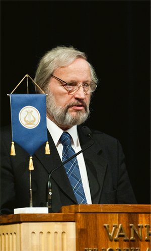

Text Petja Partanen Valokuva Veikko Somerpuro
”Science can only make progress if knowledge is public”, says Ilkka Niiniluoto, Chancellor of the University of Helsinki.
The important basic principle of the scientific method is openness. However, the policies of the scientific world are in need of an update.
”The tradition is, in many fields of science, that the results are published as articles but the research data is kept concealed”, says Chancellor Ilkka Niiniluoto.
The publicity of science should not only concern the conclusions but also the research data. A working group on the utilisation of research data, chaired by Niiniluoto, made the recommendation that opening up research data for all should form a criterion in research funding decisions.
”Possessively guarding your own data isn’t really a modern way of doing things.”
Professor Markku Kulmala from the University of Helsinki is one of those who have set a good example in terms of openness. This director of a top research unit studying the consistency of the atmosphere created a new field of research into the university: aerosol research. The Finnish network of measuring stations, built under the supervision of Kulmala, shares its observations with a worldwide community of researchers.
Open sharing of the observation data has brought visibility and increased the international importance of Kulmala’s research unit.
“That has made him the world’s most cited researcher in his field”, says Niiniluoto.
Kulmala has emphasised on a number of occasions that sharing open data is a precondition for climate change research. The global problem is impossible to research without international cooperation and the sharing of research data.
Niiniluoto’s working group has also recommended that publicly funded data sets should be made available to everyone in digital form. Niiniluoto says that university researchers often have to pay for the raw data they need in their research – even when that data has actually been produced with public tax money. This way of thinking is bound to change. The trend is towards open public data.
”The HRI project of the cities in the Helsinki Metropolitan Area deserves a lot of praise.”
There has also been heated discussion at the university about its own information policy. Research data is created in vast quantities, but there is no shared set of rules regarding its storage or publication. The gigantic data sets generated at weather observation stations or in CERN’s particle accelerator, for instance, may later turn out to be valuable in completely new and unexpected fields of research.
”We don’t know where and when the data will be needed but it may prove to be important for solving some problem in the future”, says Niiniluoto.
Should all the raw data of all research be openly available?
”That would be a good principle, provided that the researchers take notion of data security concerning the research subjects. In medicine and human sciences, in particular, we need rules for storaging the original data of the research.”
The advocates of open knowledge often criticise commercial scientific publishers, who publish most of the scientific knowledge produced in the world.
The Open Access movement is critical of the model in which a university funds a research project, the researchers write articles free of charge for the scientific journals, and their colleagues who peer-review the texts also receive no monetary compensation from the publishers.
”In other words, the publishers receive everything free of cost and sell the information back to the universities”, Niiniluoto sums up.
Universities purchase the access to the publishers’ electronic archives for their researchers. The man in the street has no access to the latest scientific data in digital form, although the printed editions of the journals can at least be browsed at the university libraries.
For researchers seeking to gain an audience outside the academic world, the publishers offer the chance to ‘buy’ their own articles in an open access format, that is, to be freely shared online. But this comes at a high price.
”The publishing house Elsevier, for instance, charges 3,000 dollars per article”, reveals Niiniluoto.
Niiniluoto proposes a solution to the problem: parallel publishing. This means that the researchers would publish their work in the conventional way, but in addition the universities would have open research databases of their own. These would store the publications for everyone to access.
”The University of Helsinki is in favour of this way of thinking.” But the implementation of the idea is held back by publishing agreements, because the major scientific publishers are understandably not too keen about the new model.
•
The texts of the publication are licensed under the 'HRI-nimeä' attribution. All reuse of the material must be accompanied by the name of the author (Petja Partanen or Terhi Upola) and the publisher (Helsinki Region Infoshare).
“Possessively guarding your own data isn’t really a modern way of doing things.”
Ilkka Niiniluoto’s ideal of decision-making is based on scientific evidence.
”Research data should be utilised more in the preparation of decisions and legislation.”